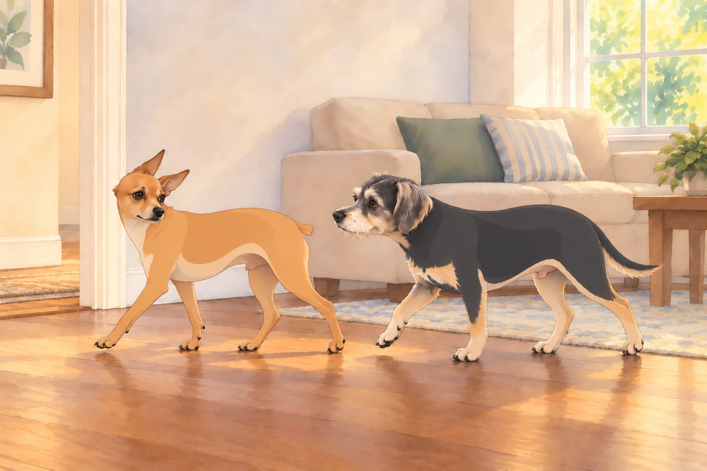
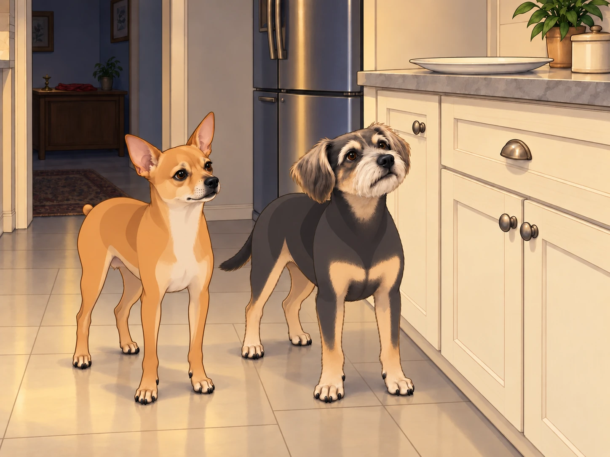

The shrine looked… different.
The marigolds had dried, the diya sat unlit, the crimson cloth was folded neatly. Ganesh Chaturthi had ended, the visarjan completed, and Lord Ganesha’s idol had been immersed. Yet the Patel household still felt full of his presence, as though the walls themselves were humming softly.
Neet lay in his sunbeam, head on paws, eyes half-closed. Buddy flopped nearby, dramatically sighing every three minutes.
“I miss him,” Buddy groaned. “The house feels too quiet.”
Neet opened one eye. “Discipline requires adapting to absence. He came, he left, mission accomplished.”
Buddy whimpered. “But… who’s going to eat the extra modaks with me? Who’s going to tell me my squeaky bone is divine?”
“Still here.”
Both dogs froze.
The voice was unmistakable: warm, playful, echoing like a drum and a flute.
“Bappa?!” Buddy squealed, wagging so hard he smacked the coffee table.
Neet immediately straightened into parade rest. “Confirmed. Spiritual signal received.”
Morning Walk: The First Message
Later that morning, Sagar and Heather took the generals for their walk. The neighborhood was still glistening with dew.
Buddy trotted ahead, sniffing furiously. Suddenly he froze. “Did you hear that?”
Neet cocked his head.
From the rustle of magnolia leaves came the familiar voice: “Joy is in small steps. Don’t rush, little one.”
Buddy gasped. “He’s on the walk with us!”
Neet nodded gravely. “Invisible mentor confirmed. Spiritual comms channel open.”
Buddy whispered, tail wagging: “Does this mean… Bappa is like… on our group chat forever now?”
Neet sighed. “In a manner of speaking.”
Buddy took three very small steps. Heather stopped to see what he was sniffing.
“Nothing,” Buddy whispered. “I’m doing the lesson.”
Neet waited while Buddy took another one.
Buddy’s Snack Crisis
That afternoon, Heather made rotis while Sagar chopped spinach for lunch. The smell filled the air like edible music.
Buddy sat stationed under the counter — Gravity Enforcement Officer, always ready for falling crumbs. But no crumbs came.
Buddy shifted six inches to the left. Still no crumbs. He returned to his original post.
Buddy’s stomach rumbled. “This is suffering. Actual suffering.”
Then he heard it.
“Patience, little one. Heather hasn’t finished the first roti.”
Buddy blinked. “So waiting counts? My stomach is being very patient.”
Neet, listening from his corner, muttered, “Don’t abuse the teaching. He’s not telling you to eat the roti dough.”
Buddy licked his lips, then sat back on his haunches. “It’s making an announcement.”
Heather glanced down at him. “The first one isn’t even ready.”
Buddy looked from her to the empty air. They were clearly coordinating.
Neet’s Zen Reinforcement
Later, while the house napped, Neet performed his afternoon patrol by the window. Martha & Sally, the neighbor bark-sisters, unleashed their usual wall of noise.
For a second, Neet felt his old reactivity bubble up — the urge to bark, to declare dominance. But then he heard it:
“Must you answer, General?”
Neet paused with a full bark ready. He let the breath out through his nose instead. His chest settled. He turned away, calm.
Buddy blinked in awe. “You… didn’t bark back.”
Neet smirked. “Invisible mentor upgraded me.”
Buddy wagged. “Best upgrade ever.”
Outside, Martha and Sally started again. Neet’s ears turned toward the window. The rest of him kept walking.
Buddy followed, careful not to congratulate him too loudly.

Nighttime Kitchen Raid
That night, when Heather and Sagar dozed off, the dogs crept to the kitchen. Buddy’s nose was on high alert: the counter still smelled faintly of modaks.
“Operation Sweet Tooth, commence,” Buddy whispered.
Neet frowned. “This is dishonorable. Festival is over. No more unauthorized raids.”
Buddy stood on his hind legs, sniffing toward the counter. “But what if… Bappa wants me to keep the prasad warm? In my stomach?”
And then came the voice, full of humor: “Moderation, Buddy. Moderation.”
Buddy squeaked. “He CAUGHT me!”
Neet chuckled. “The divine CCTV sees all.”
Buddy lowered his paws to the floor. “Even invisible, he blocks my snacks.”
“Remover of Obstacles,” Neet reminded him.
“I’m beginning to suspect I’m the obstacle.”

Epilogue
Days passed. The shrine remained empty, but Neet and Buddy never felt alone. In every rustle of marigolds, every flicker of a lamp, every quiet moment of joy, Ganesha’s voice seemed to linger — sometimes playful, sometimes profound, always present.
Neet sat by the window one evening, eyes on the sunset. “Even unseen, he guides us.”
Buddy flopped beside him. “Best festival ever. And it’s still going.”
The house glowed in twilight. The King and Queen sipped chai, unaware that their generals were carrying on secret divine conversations. And somewhere, in the laughter of the home itself, the Lord of Beginnings smiled.